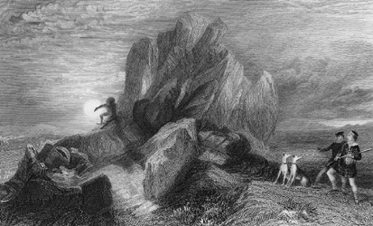

|
|
||||
|
|
Home | Corson Collection | Biography | Works | Image Collection | Recent Publications | Portraits | Correspondence | Forthcoming Events | Links | E-Texts | Contact The Black Dwarf(Tales of My Landlord, First Series)First Edition, First Impression: Tales of My Landlord. Collected and Arranged by Jedediah Cleishbotham, Schoolmaster and Parish-clerk of Gandercleugh. In Four Volumes. Vol. I (II-IV). Edinburgh: Printed for William Blackwood, Prince's Street: and John Murray, Albemarle Street, London, 1816. Tales of My Landlord | Composition | Synopsis | Reception | Links Tales of My Landlord
The contract to write Tales of My Landlord was signed in 1816. Negotiations were conducted between William Blackwood and James Ballantyne, Scott's printer and partner. James's brother John usually acted as Scott's literary agent but he was distrusted by both Blackwood and Murray. Despite all efforts to preserve Scott's anonymity, both publishers were certain that they were dealing with the 'Author of Waverley' and scarcely less sure that the author was Scott. The Tales of My Landlord were originally intended to comprise four volumes, each containing a separate story set in a different region of Scotland: the Borders, the (south-)west, the Highlands, and Fife. Only the first two, The Black Dwarf and Old Mortality, were completed, the latter over-running its designated length to fill three of the four volumes. The idea of tying the tales together through the narrative voice of the pedantic schoolmaster Cleishbotham may well have occurred to Scott during the negotiations for the Tales in April 1816, when his antiquarian friend Joseph Train told him of his plan to compile a History of Galloway. This involved circulating a questionnaire among the parish clerks and schoolmasters of Galloway. One response which Train showed to Scott was humorously signed 'Clashbottom'. CompositionThe first volume of the Tales of My Landlord, The Black Dwarf, is set in the Liddesdale hills, an area which Scott knew intimately from the time he had spent hunting ballads for his Minstrelsy of the Scottish Border. The plot itself draws on a number of Border Ballads. The adventures of Hobbie Elliot, the pillage of Heughfott, appeal to the Black Dwarf for help, gathering of forces, and the 'siege' of Westburnflat parallel events in the ballads 'Jamie Telfer of the Fair Dodhead' and 'The Fray of Support'. The extensive knowledge of Border history and lore acquired while compiling the Minstrelsy was further broadened by Scott's work on The Border Antiquities of England and Scotland (1814-17). The 'Black Dwarf' himself draws on Border folklore, in particular, legends of the 'Brown Man of the Moors'. There was also, however, as Scott himself acknowledged in the 'Magnum Opus' edition of The Black Dwarf, a human model: the reclusive David Ritchie, whose cottage Scott had visited while staying with his friend Captain Adam Ferguson in Peeblesshire, 1797. Scott may well have started writing The Black Dwarf during his spring stay in Abbotsford, but progress was considerably slower than his publishers had been led to expect. Having been promised that the first volume would be in print within a month of the contract being signed, Blackwood issued an ultimatum on 31 July, forcing Scott to write and to release copy at a much swifter rate. The volume was in print by the end of August but pressure from his publishers may have led Scott to conclude too hurriedly. Certainly, having read the first 192 pages with mounting excitement and assured John Murray (23 August 1816) of 'the splendid merit of the work', William Blackwood felt that the finished article was marred by a weak ending. He asked James Ballantyne (who shared some of his disappointment) to forward to Scott suggestions for a revision which appear to have originated with William Gifford, Murray's literary adviser. Scott, incensed that Gifford had been consulted, refused to alter a word. Privately, however, Scott acknowledged the force of Blackwood's criticisms. He had begun the novel well, he wrote to Lady Louisa Stuart, 'but tired of the ground I had trode so often before I had walked over two thirds of the course. [...] So I quarrelled with my story, & bungled up a conclusion as a boarding school Miss finishes a task which she had commenced with great glee & accuracy' (letter of 14 November 1816). Having completed The Black Dwarf, Scott turned to the 'tale of the West', Old Mortality. As this tale took hold of Scott's imagination, however, it expanded to fill the remaining three volumes of the Tales of My Landlord. The original scheme for the Tales was never carried out. Only The Black Dwarf was completed in accordance with the original plan of setting four tales in four separate regions. Complete in one volume, it remains something of an anomaly in Scott's production. It was published along with Old Mortality on December 2, 1816.  SynopsisThe Black Dwarf is set in the immediate aftermath of the Union between England and Scotland in 1707. The political action is centred on the first uprising to be attempted by Jacobites after the Union, the aborted landing of the exiled James Francis Edward Stuart and a large French fleet in March 1708.The dwarf of the title is Sir Edward Mauley, who, in his youth, has embraced the quarrel of his friend and kinsman Richard Vere, killing his rival the Laird of Earnscliff. While imprisoned for manslaughter, he learns that Vere has betrayed him by marrying his intended bride. He retires in misanthropical disgust to Mucklestane Moor, where his extraordinary strength, knowledge of medicine, and ready wealth lead the local people to regard him as a supernatural being in league with the Devil. Living incognito, he is known as Elshender the Recluse. Vere lives nearby with his daughter Isabella who has fallen in love with Earnscliff's son, Patrick. Vere opposes the union, and, in order to further his Jacobite schemes, forces Isabella to consent to marriage with Sir Frederick Langley. Isabella appeals to Mauley for assistance. As Vere's expenditures have brought his lands under Mauley's control, he is able to show Langley that Isabella is penniless without his consent, and the marriage is prevented at the last minute. The Jacobite plot is discovered, and Vere and Langley flee the country. Revealing his true identity, Mauley bestows his fortune upon Isabella who marries Patrick Earnscliff. Mauley disappears and his ultimate fate remains a mystery. ReceptionFor both critics and public, The Black Dwarf suffered by comparison with its companion piece Old Mortality. The Critical Review described it as a 'story possessing considerable capabilities' but marred by 'the multiplication of characters'. The Monthly Review felt that its interest lay only in the minor characters and that the primary plot was dull. The only positive notices appeared in the Scots Magazine and the British Review, for which The Black Dwarf was 'conducted with singular art, embracing much well sustained character and striking incident'. One of the novel's harshest critics was Scott himself who reviewed it anonymously in the Quarterly Review, lamenting that the explanation of Mauley's conduct was 'too long delayed from an obvious wish to protract the mystery', and then dealt with so hastily as to be almost incomprehensible. Like the 'Author of Waverley''s other novels, the construction was slovenly and the hero uninteresting in character and inconsistent in behaviour. Despite its poor critical reception, The Black Dwarf, aided by the success of Old Mortality, appeared in five independent editions in under three years. Links
Last updated: 19-Dec-2011 |
|||